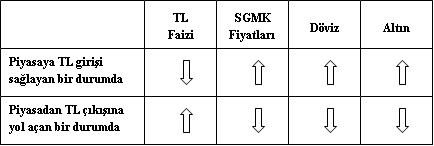
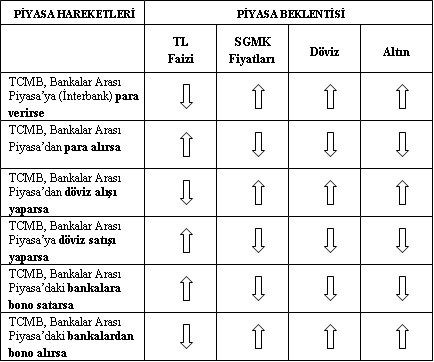
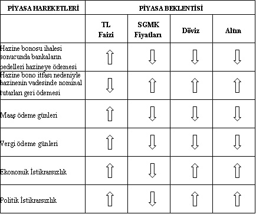

TCMB
Tarih kitabının tozlu yaprakları arasında bir “kendini bilmez”in oldukça yanlış bir biçimde kullandığı bir cümleyi işimize çok da uygun bir hâle getirebiliriz:
Faiz ve döviz, serbest piyasanın insafına bırakılamayacak kadar önemli ve kontrol edilmesi gereken değişkenlerdir.
Ekonominin ve finansal piyasaların üzerinde ayakta durmaya çalıştığı bu iki sütunun makul değerlerde kalmasını (yan) iş edinen ve bu yönde politikalar üreten kurum Merkez Bankası’dır.
Türkiye Cumhuriyeti Merkez Bankası’nın asıl görevi, pek çok modern merkez bankasının olduğu gibi, “fiyat istikrarını sağlamaktır”. Daha anlaşılır bir ifade ile “enflasyonu belli bir düzeyde tutmaktır”.
Merkez Bankası bu görevini yerine getirmek için faiz ve döviz silahlarına başvurur. Söz konusu silahları tek tek ya da birlikte kullanmakta ve asıl görevini başarmaya çalışmaktadır. Ulus-lararası para ve sermaye hareketlerinin bu denli yoğun olduğu bir dünyada söz konusu silahları istediği biçimde kullanamadığı, kullansa bile arzu ettiği sonuçları elde edemediği çok kez gözlemlense de, yine de, sistemdeki en güçlü oyuncu olduğu ve müdahalesinin er ya da geç etkili olacağı inancı piyasalara hâkimdir. (En azından öyle olduğu umulur.)
OLANAKSIZ ÜÇLÜ
Finansal değişkenlerin kontrol edilmesini tartışan temel yaklaşımlardan birisi “olanaksız üçlü”dür. Bu yaklaşım, en basite indirgenmiş hâliyle, para piyasaları ile ilgili olarak kontrol edilebilir 3 değişkene sahip olunduğunu ve Merkez Bankası’nın bunlardan üçünü birden kontrol edemeyeceğini öngörür. Bu değişkenler şunlardır:
• Ülkeye giren ve çıkan paranın kontrol edilmesi ya da serbest bırakılması.
• Faiz hadlerinin kontrol edilmesi ya da serbest bırakılması.
• Döviz kurlarının kontrol edilmesi ya da serbest bırakılması.
Bu değişkenlerden ilki, uzun süredir belli ve değişmez görünmektedir. Ekonomik sistemimiz uyarınca para hareketleri serbest bırakılmıştır. Buna göre yabancı yatırımcılar, doğrudan yatırım ya da portföy yatırımı amacıyla ülkemize para getirebilir ve istediklerinde de bu parayı geri çıkarabilir. Bu konuda yükselen piyasaların ekonomi yönetimlerinin ara sıra sermaye hareketlerine sınırlama getirme çabaları görülse de sıcak paranın bu gibi kararlara verdiği tepki o denli ağır olmaktadır ki, çabaların genelde kural koyucuların bu kararlarından geri dönmeleri biçiminde sonuçlandığı söylenebilir.
O hâlde 3 değişkenden ilki, sermaye hareketlerinin serbest olması biçiminde sabitlenmiş görünüyor. Geriye 2 değişken kalıyor: faiz ve döviz.
Kalan iki değişkenin ikisinin birden kontrol edilmesi teorik olarak mümkün değil. O hâlde Merkez Bankası’nın ya faiz belirleyerek döviz kurlarını dalgalanmaya bırakmasını ya da tam tersini yapmasını bekleyeceğiz. Aslında merkez bankaları değişkenlerden birisini kontrollerinde tutarken diğerini çok da serbest bırakmamakta ve dolaylı bir biçimde onu da yönlendirmeye çalışmaktadır.
TCMB MÜDAHALESİ VE ETKİLERİ
Merkez bankaları genellikle ne zaman ne yapacaklarını piyasalara tam olarak söylemezler. Bu durum, özellikle de mantığı gereği “müdahaleler” için geçerlidir. Eğer piyasayı “yönlendirmek”, “caydırmak” ya da “cezalandırmak” için müdahale edilecekse, doğal olarak nasıl, ne zaman ve ne miktarda müdahale edileceği önceden söylenmez.
Öte yandan, bazen “bir şeyler yapacağını” söylemek ya da ima etmek de bir tür müdahaledir. Bu anlamda biz merkez bankalarının çok sık müdahale etmemelerini bekleriz. Onlar sadece gerektiğinde ve serbest piyasanın kendiliğinden dengeyi kuramayacağını öngördüklerinde böylesi bir müdahaleyi tercih edeceklerdir.
Peki, merkez bankaları piyasaya nasıl müdahale ederler ve bu durum ne gibi sonuçlar yaratır?
Bu konuyu detaylandırmadan önce kitabın önceki bölümlerinde birkaç kez bahsetmiş olduğumuz bir mantığı bir kez daha hatırlatmakta yarar görüyoruz: Döviz kurları ve faiz seviyesi birbirleriyle ters yönlü ilişki içindedir. Buna göre, YTL faiz seviyesi yeterince yükselirse, yatırımcılar yüksek faiz seviyesinden yararlanmak amacıyla dövizlerini bozacak ve YTL’ye geçeceklerdir. Bu da döviz kurlarını düşürecektir. Tersi olursa, yani YTL cinsinden faizlerin düşmesi durumunda ise, yatırımcılar, zaten düşük seviyede olan dövize yönelecek ve kurlar yukarıya doğru hareket edecektir.
Bu hatırlatma sonrasında, Merkez Bankası’nın faizi etkilemek üzere yapacağı bir müdahalenin döviz kurlarını ters yönde etkileyeceğini öngörebiliriz. Elbette bunun tersi, doğrudan dövize yapılacak bir müdahale de kur tarafında gözlemlenecektir.
Onu Anladık, Sen Müdahalenin Mekaniğinden Haber Ver!
Yukarıda özetlenmeye çalışılan mantık uyarınca müdahale etkilerini şöyle yorumlamakta fayda görüyoruz:
a. İşlem sonucunda piyasaya para giriyor mu?
b. İşlem sonucunda piyasadan para çıkıyor mu?
Aslında bakılacak olan değişken son derece basittir. Senaryo yazmak yok. Uzun vadeli düşünmek yok. Sisteme para giriyor mu, yoksa çıkıyor mu? Sonuç ise şöyle:
a. Sisteme para girişi var ise, YTL bollaşacak demektir, o hâlde faizlerin düşmesi ve kurun artması beklenmelidir.
b. Sistemden para çıkışı var ise YTL azalacak demektir; o hâlde faizlerin yükselmesi ve kurun düşmesi beklenmelidir.
Bu arada; faizlerin Sabit Getirili Menkul Kıymet (SGMK) fiyatlarını ters yönde etkilediğini de bir kez daha hatırlatmakta yarar görmekteyiz.
Son hatırlatmamız da şu olacak: Altın fiyatları dünyada USD üzerinden fiyatlandığına göre, ülkemizde kurun artması, altın fiyatlarını da YTL bazında arttıracak demektir. Elbette bu argümanın tam tersi de geçerli olacaktır.
Tüm hatırlatmaların bir özetini yapmak gerekirse:

Yukarıdaki açıklamaların ışığında, Merkez Bankası’nın atacağı adımların etkilerini özetlemeye çalışalım:

MÜDAHALE DIŞI PİYASA GELİŞMELERİ VE ETKİLERİ
Bu arada, bazı müdahale dışı, “doğal” hatta “rutin” gelişmeler de faiz ve döviz üzerinde sonuçlar yaratacaktır. Bunları da ayrı bir başlık altında incelemeyi uygun gördük.

Yukarıdaki tabloda, son iki maddeye dikkat edilmesi gerektiğini önemle vurguluyoruz. Sistemde herhangi bir nedenle bir istikrarsızlık oluşması hâlinde, hızlı para çıkışı olacaktır. Bu durumda yatırımcılar YTL cinsinden SGMK’ları hızla satarak dövize yönlenecekler ve bu da beraberinde hem faizde hem de kurlarda bir artışı getirecektir.
O hâlde...
Bu bölümde, “Ekonomiye Bulaşmak: Makro Ekonomik Göstergeler ve Yorumlanması” bölümünde konuştuğumuz sürece çok yakın, ama ona göre çok daha hızlı hareket eden etkileşimleri tartıştık. Ayrıca faiz ve döviz kurunun ters yönlü hareket ettiği ve faiz seviyesinin SGMK fiyatlarını etkilediği yapıları tartıştık.
Bununla birlikte, makroekonomik göstergelerin hareketinden farklı olarak burada doğal süreçlerin yanı sıra Merkez Bankası müdahalesi de vardı. Piyasalar ekonomik süreçlerin ağırlığından uzak bir biçimde etkiye çok hızlı tepki veriyorlardı. Örneğin TCMB’nin dövize alım yönünde müdahale etmesi durumunda kurlar hemen yükseliyordu.
Bölüm dâhilinde, “olanaksız üçlü”den de bahsettik. “Trilemma” olarak da adlandırılabilecek bu açmaz, sistemdeki üç değişkenin birden kontrol edilemeyeceği varsayımına dayanmaktaydı:
• Sermaye hareketlerinin kontrolü
• Faiz seviyesinin kontrolü
• Döviz kurlarının kontrolü
Son olarak da bir müdahale ya da doğal akış sonucunda piyasaların birbirleriyle nasıl etkileştiklerini inceledik. Bu süreçteki adımlar şöyleydi:
• İşlem sonucunda piyasaya para girişi oluyor:
• YTL Faizleri Düşer ==> SGMK Fiyatları Artar ==> Döviz Kuru Artar ==> Altın Fiyatları Artar
• İşlem sonucunda piyasadan para çıkışı oluyor:
• YTL Faizleri Artar ==> SGMK Fiyatları Düşer ==> Döviz Kuru Düşer ==> Altın Fiyatları Düşer